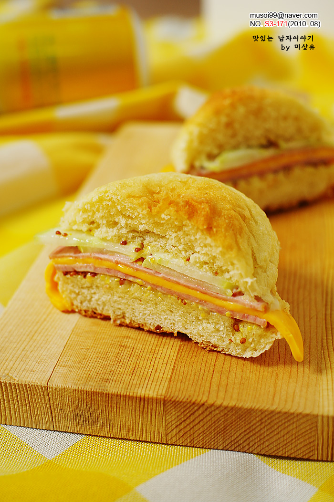

햄 치즈 버거
재료
: 햄버거 빵 1개, 마요네즈 2작은술, 씨겨자 1작은술,
햄 2장, 치즈 1장, 오이 작은 것 1토막
햄버거빵은 오븐에 2~3분 데우거나, 전자렌지에서 30초
데워 반을 가릅니다.
빵 아래 쪽에 데치거나 구운 햄을 한장 깔고, 치즈, 햄,
얇게슬라이스한 오이 순으로 올려주세요.
남은 빵을 덮어주면 완성!
Tip. 취향에 따라 케찹을 뿌려도 좋아요.